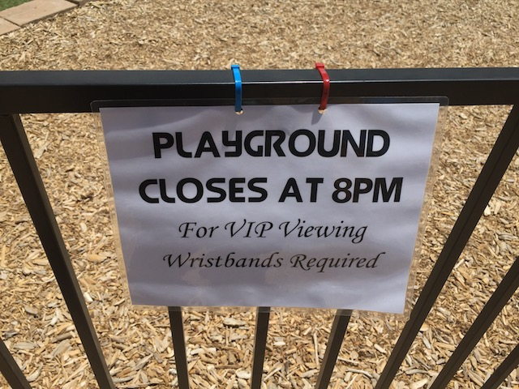

| |
Aztec Falls 2017
All right. Time for another cliff jumping update. I know it's been a really long time since we last made one of these, but yeah. The time has come, and we actually had a really good cliff jumping season this year. I know we're mainly a roller coaster website, and yeah. We do a lot of roller coaster updates and park reviews, etc. But we occasionally do other stuff, such as cliff jumping updates. And we're here today to cliff jump at Tule River. Oh, and we stopped at Panda Express beforehand for brunch. I was really nervous as I was repeatedly told that Panda Express has gone downhill and sucks now, which really depressed me as I love Panda Express and it's one of my favorite fast food chains. Luckily, that was disproven and it's just as good as I remember it.
LIES!!! I BEFRIENDED MYSELF!!! AND I'M STILL F*CKING LONELY!!! ='(
Well, we're back at Tule River. We cliff jumped here once in 2015, and while the jump was fairly small at only 40 ft, I still really liked it. Hopefully we can find that giant waterslide this time.
F*CK!! Tule River is closed today. Well, on the bright side, it's not closed because of polluting assholes unlike another certain cliff jumping spot that is still my all time favorite cliff jumping spot and has a real soft spot in my heart. No, Tule River is closed because the river is rushing too much and they closed it for safety reasons. Damn. We actually have been getting a lot of rain this season. It's like the drought is finally over (Is it? It certainly felt like it after all the rain we got in the winter. Just checked, and yep. The drought is officially over. YAY!!!!). So because of how much rain we got, Tule River actually got too much water and is now really flowing at unsafe speeds and it's dangerous to be in. So yeah. If we jumped that 40 ftr, we wouldn't have been able to get out. We probably would've just been swept away. Hell, I think the place where we put our stuff is underwater now. It just might be. But anyways, we can't get down in there. We were hoping to come back in September when the water levels would've died down and it would've been of jumping levels. But that never happened as we never found the time and too much sh*t got in the way.
All right. So we couldn't go to Tule River today. But we don't want to just do nothing. So after some talk, we decided to drive on down to Aztec Falls, as that's essentially the only cliff jumping spot in Southern California I had yet to visit (at least the only one that's big enough to be known about). So after the 3 hour drive to Tule River, we then decided to drive for 5 hours in the opposite direction and head down to Aztec Falls. Because yeah. We're that f*cking crazy and would do a thing like that.
Ugh. SoCal is burning once again. No seriously. This fire was actually serious! The enitire area smelled like smoke, and you could see it all due to just how close we are to Big Bear, which was burning.
For all you guys who want to fish at Aztec Falls.
Warning. It's a really long hike to actually get to Aztec Falls. I think this is as long as the Tar Creek hike, if not longer. And despite all the driving we've done today, we still have time for this.
Fun fact. We're actually actually on the Pacific Crest Trail right now. If we just keep hiking this trail, we'll eventually wind up hiking to Manning Park in British Columbia. Part of me wants to hike it. But I just don't have the time or dedication to do it. I've got too much other sh*t that I care about to do so.
Well. We did it. We finally made it to Aztec Falls, where we came across these kids who were into cliff jumping. While we didn't do the 60 ftr this day, we did do the smaller 40 ftr. They cliff jumped, and even were able to do cool flipping tricks similar to those at L.A Swimming. We chatted with them, told them about the cliff jumping we do, that I'm also a long distance runner, and of course, about the fact that we run a roller coaster website.
Well, that was one hell of a day we just had.
Hello L.A at night.
 All right. We're back at Aztec Falls for more cliff jumping fun as well as some other work. But first, let's check out the surrounding town of Lake Arrowhead.
All right. We're back at Aztec Falls for more cliff jumping fun as well as some other work. But first, let's check out the surrounding town of Lake Arrowhead.
See look! There really is a Lake Arrowhead! It's not just a name!
How's it going guys? I'm a fish. And you're all a bunch of morons who like to jump off cliffs for fun.

Out of our way stupid kids! It's our playground now! We have V.I.P Playground time! We own it bitches! =)
Who the hell just throws away a juice box!? It's not even an empty juice box! It's mostly full! They didn't even drink it!
God damn! There's way more trash here than expected!
 OK. So if you've read any of our cliff jumping updates, or really, any updates that involve any sort of outdoor activities, you'll quickly learn that we're big enviromental people and REALLY HATE litter. Seriously, F*CK LITTERS!!! You know what, screw the censor (Honestly, the censoring is just a force of habit. I don't know why I do it other than I always have, and...eh. Force of habit)! FUCK YOU LITTERERS!!! We've now complained about them forever. Honestly, part of me considered completely stopping any cliff jumping updates just so these drunken littering assholes don't see the fun we're having, go, and ruin the place. But no. I'm not going to do that. A: Because people will still find out about these places and ruin them. I know if you search Tar Creek on Youtube, my video of us jumping the 70tr is the 4th result to show up. Not to mention, both of my video of driving to Tar Creek Falls as well as my Tar Creek music video (honestly, that's my favorite video I ever made), as well as Cody's video of us jumping the 70 ftr for the first time and his Tar Creek music video. But even without all this stuff, littering assholes will always find a way. B: I genuinely want to share these cool places with people. I want people to know of these places and enjoy them. I just don't want them to RUIN them with F*CKING LITTER!!! C: I want to show off just how polluted these places have gotten. I want to show people the trash and how great cliff jumping spots are being ruined by littering assholes. I know we at Incrediblecoasters have been working on a certain project dealing with this that I was hoping would be launched by now, but thanks to life getting in the way and having sh*t to do, it sadly wasn't ready by the time this update rolled around. But hopefully by 2018, we'll have announced a certain anti-littering project that we've been working on for quite a while now, and todays day at Aztec Falls, picking up all this trash, is part of that. We want people to see that we're here. We want them to see all the sh*t we're picking up. Like, look! On top of all the normal trash, we've also found a ton of broken glass, and a shirt! Just...a shirt! In the dirt, laying there for no reason! Wonder how long that's been there.
OK. So if you've read any of our cliff jumping updates, or really, any updates that involve any sort of outdoor activities, you'll quickly learn that we're big enviromental people and REALLY HATE litter. Seriously, F*CK LITTERS!!! You know what, screw the censor (Honestly, the censoring is just a force of habit. I don't know why I do it other than I always have, and...eh. Force of habit)! FUCK YOU LITTERERS!!! We've now complained about them forever. Honestly, part of me considered completely stopping any cliff jumping updates just so these drunken littering assholes don't see the fun we're having, go, and ruin the place. But no. I'm not going to do that. A: Because people will still find out about these places and ruin them. I know if you search Tar Creek on Youtube, my video of us jumping the 70tr is the 4th result to show up. Not to mention, both of my video of driving to Tar Creek Falls as well as my Tar Creek music video (honestly, that's my favorite video I ever made), as well as Cody's video of us jumping the 70 ftr for the first time and his Tar Creek music video. But even without all this stuff, littering assholes will always find a way. B: I genuinely want to share these cool places with people. I want people to know of these places and enjoy them. I just don't want them to RUIN them with F*CKING LITTER!!! C: I want to show off just how polluted these places have gotten. I want to show people the trash and how great cliff jumping spots are being ruined by littering assholes. I know we at Incrediblecoasters have been working on a certain project dealing with this that I was hoping would be launched by now, but thanks to life getting in the way and having sh*t to do, it sadly wasn't ready by the time this update rolled around. But hopefully by 2018, we'll have announced a certain anti-littering project that we've been working on for quite a while now, and todays day at Aztec Falls, picking up all this trash, is part of that. We want people to see that we're here. We want them to see all the sh*t we're picking up. Like, look! On top of all the normal trash, we've also found a ton of broken glass, and a shirt! Just...a shirt! In the dirt, laying there for no reason! Wonder how long that's been there.
OK. I'm not sure why there's a bunch of dead bugs in that bottle, but it freaked me out. Seriously, it fell over and these dead bugs just popped out. WHY!!?
Anybody need a frying pan for cooking? (SERIOUSLY! THIS IS THE SH*T WE FIND DOWN HERE! WHAT'S WRONG WITH YOU!!?)
Hey look! Snakes! We're cliff jumping into water with snakes in it!
As well as snakes, the water at Aztec Falls also contains fish. Not surprising, however, these fish will nip at your feet. They're even apparently called Doctor Fish (though they're offically called Garra Rufa) as they're used as tourist traps in certain places. It feels really weird and even tickles a little bit. An intersting experience. However, people love it. To the point where there are even fish spas and people will pay money to stick their feet in a tank and have the fish nip at their feet. Uh...this isn't something I'd pay money for. But hey. Now I can at least say I've had a fish spa before. And it was a natural one in the wild! And I didn't have to pay for it! =P
OK. That's enough trash cleanup. I need a break. Time for some cliff jumping.
Embarassingly, we never did the 60 ftr here. Partially because it is just such a pain in the ass to get up to it, ESPECIALLY without shoes or sweatpants to protect you from the rocks and sticks on the ground and all the prickly bushes that'll scratch you to get to it. But also, just the set up freaked us out.
Here's the view from the top. The issue is the landing. Yeah. You can overshoot, but the real issue is with undershooting. I'm terrified of just landing on those rocks. I know this seems stupid considering, just look at the 70 ftr @ Tar Creek. We jump that all the time, and from certain angles, that looks like suicide.
I mean, just look at the photos of us jumping the 40 ftr. It looks like we're way too close to those rocks. Like we're right above them. However, when you really think about it, the 40 ftr and the 60 ftr have the exact same set up, the exact same distance to clear, and while it looks terrifying. Actually jumping, I never once thought that I was going to hit the rocks and it just looks terrifying watching in the same way watching others jump the 70 ftr is terrifying to see. My mind is just being a little bitch and I just need to slap myself out of it. *Sigh* When I finally do jump it, I'm going to feel like such an idiot for freaking out as much as I am.
GRAVITY KICKS ASS!!!
I'm not sure if that's a bottle and trash, or some sort of natural wasp thing. Either way, we're just gonna have to leave that simply due to just the sheer amount of wasps surrounding it.
All right. We should probably head on back while it's still light.
Well that was a successful day hanging out, picking up other assholes trash, and cliff jumping. Might as well close off with a fast food place I really like and don't eat at enough. Sonic.
Home
|